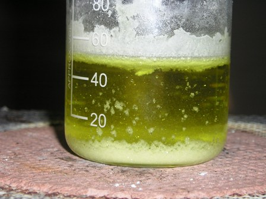
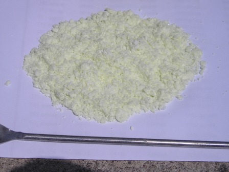
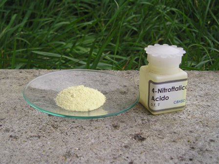

La sintesi del Luminol (5-amino-2,3,-diidroftalazina-1,4-dione) è lunga e laboriosa, pertanto la suddivido in più sottofasi per renderne più scorrevole la procedura: la preparazione dell'acido 3-nitroftalico è la prima fase da affrontare ed è anche la più impegnativa.
Se si vuol fare la sintesi completa con buona soddisfazione bisogna per forza partire da qui. A breve pubblicherò in successione i post del lavoro, che formeranno la sintesi completa di questa suggestiva sostanza "da criminologia"...
Alla fine metterò le reazioni e l'indispensabile test pratico del prodotto, ovvero lo scopo di tutta la ludica faticaccia!
Fase 1:
preparazione dell'acido 3-nitroftalico C6H3(COOH)2NO2
Questa nitrazione è molto lunga e delicata e va tassativamente seguita nel controllo della temperatura.
La sintesi va fatta solo se si ha adeguata esperienza nelle nitrazioni!
---
-In un becker da 250 ml predisposto per essere riscaldato o raffreddato in bagno d'acqua e con termometro immerso, porre 65 ml di H2SO4 conc. e 50 g di anidride ftalica. Mescolare e riscaldare a 80°; l'anidride si scioglie praticamente tutta. Aggiungere ora lentamente goccia a goccia 22 ml di HNO3 fumante agitando energicamente e mantenendo la temperatura a circa 90-100°, mai superare i 110°. L'aggiunta richiede circa mezz'ora; attenzione che la temp. tende a salire dopo ogni aggiunta, quindi aspettare che la reazione si calmi prima di proseguire. Se la temp. è controllata, in questa fase si ha emissione di vapori acidi, ma non di ossidi d'azoto. In caso di raffreddamento con acqua, se la temp. è sotto gli 80° la reaz. è più lenta e si accumula HNO3 che poi reagisce troppo energicamente riscaldando un po'. Fare con cautela e calma.
Dopo l'aggiunta dell'HNO3 fumante, aggiungere ancora 90 ml di HNO3 concentrato (non il fumante) il più rapidamente possibile ma controllando sempre che la temp. non salga oltre i 110°.
Dopo metà aggiunta dell'acido nitrico comincia a formarsi un prec. bianco. Tenere riscaldato per un'ora e mezza a circa 90° e poi lasciar riposare una notte.
Si sarà formato abbondantissimo precipitato, quasi a solidificare tutta la soluzione acida.

Versare la soluzione in 250 ml di acqua, mescolare e lasciar raffreddare e decantare.Pipettare lo strato acido superiore di colore giallino per quanto possibile e poi filtrare su buchner la mix di ac. 3- e 4-nitroftalico.
Porre il solido quasi bianco in 20 ml di acqua, che scioglie la maggior parte del 4-nitroftalico formando una soluzione gialla.
Rifiltrare e sciogliere il solido con 25 ml di acqua bollente e filtrare a caldo.
Mescolare finchè comincia la cristallizzazione e lasciar riposare una notte per completare l'operazione.
Filtrare e seccare in aria. Resa 19 g, praticamente sovrapponibile a quella della mia fonte (Vogel, che ne ottiene 20 g, circa il 30%). P.f. 215-218° -

Alla fine il 3-nitroftalico si presenta come un solido bianco o giallino pallidissimo, cristallino e l'isomero 4- in soluzione di colore giallo limone.
La differenza di solubilità dei due isomeri è veramente notevole (per fortuna!).
Durante la nitrazione vera e propria non avevo certo nè tempo ne possibilità di fare foto, pertanto manca la documentazione di quella fase, ma ciò non è particolarmente significativo.
Le acque madri possono essere usate per separare il 4-nitroftalico (foto finale) del quale magari mi occuperò a parte.

A breve seguirà la Fase 2, che trasformerà quest'acido nientepopodimenochè in
5-nitro-2,3-diidro-1,4-ftalazinadione...